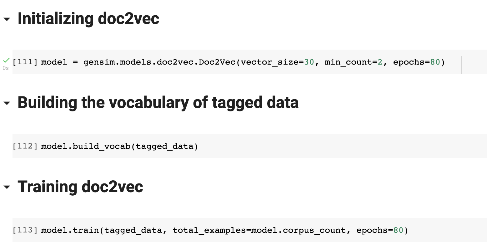
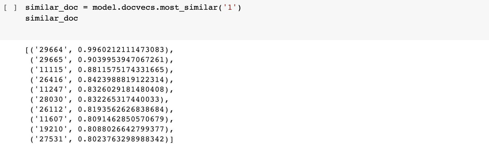

Dataset
The dataset containing all the news articles is from Kaggle. The data was scraped using BeautifulSoup and stored in Sqlite, the entire Sqlite database is about 1.2 gb. The publications include the New York Times, Breitbart, CNN, Business Insider, the Atlantic, Fox News, Talking Points Memo, Buzzfeed News, National Review, New York Post, the Guardian, NPR, Reuters, Vox, and the Washington Post. The data primarily falls between the years of 2016 and July 2017, although there is a not-insignificant number of articles from 2015, and a possibly insignificant number from before then.
Approach
There are many challenging tasks in the domain of Natural Language Processing that can be accomplished by transforming contextual data into low-dimensional vectors, and thats were doc2vec paradigm comes into play by converting a written document to its numerical representation.
Word2vec is another model that converts words into vectors in order to represent their meaning. But the reason we went with Doc2Vec was because of the large number of documents we have in our dataset and the main goal is to find plagiarism which means to find documents that are similar to each other in a contextual sense. Doc2vec is almost similar to word2vec but unlike words, a logical structure is not maintained in documents, so while developing doc2vec another vector named Paragraph ID is added into it.
For the implementation of doc2vec, we used the popular open-source natural language processing library known as Gensim (Generate Similar) which is used for unsupervised topic modeling. The dataset we got from Kaggle had over 142570 rows and 10 columns. For our model we only utilized the title and content columns. There were a lot of articles with no content or content containing less than 30 words, so we decided to remove such rows from the dataframe.
We also added fix plagiarised articles which were as follows:
- Article 1 plagiarized using QuillBot
- Article 1 plagiarized using EditPad
- Article 1 plagiarized using Paraphraser
- Article 2 plagiarized using QuillBot
- Article 2 plagiarized using EditPad
- 250 words from Article 1 combined with 250 words from Article 2 plagiarized using Paraphraser
In order to build our dataset, we also decided to only select articles containing not more than 500 words. After that the next step in preparation of data for training our doc2vec model was done by tagging our data. 
Results
In order to check whether the plagiarism checker is working properly or not we ran two tests: finding documents similar to article 1 and article 2 in our dataframe which were indexed 0 and 1 respectively
Article 1
We can see that the four articles which were plagiarised based on Article 1 show up as top 4 similar documents to article 1
Article 2
We can see that the two articles which were plagiarised based on Article 2 show up as top 2 similar documents to article 2. Unfortunately we cannot see the article which was plagiarised half from article 1 and half from article 2, this might get fixed by training the model for more epochs
